로그인하면 열리는 홈(채팅 상자와 프로세스 정의 체계도), 왼쪽 사이드바, 위쪽 막대와 「관리」 메뉴, 조직도와 설정 화면을 차례로 둘러보며 어디서 무엇을 하는지 익히고, 휴대폰으로 열었을 때의 화면과 모바일 버전(휴대폰 웹)도 확인합니다.
로그인하면 — 홈#
1장에서 가입하면 바로 홈이 열립니다. 위쪽에 채팅 상자, 아래쪽에 프로세스 정의 체계도가 있습니다. 이 튜토리얼에서 가장 자주 쓰는 화면입니다. 다른 화면에 있다가 돌아올 때는 사이드바 맨 위 「Process GPT」 오른쪽의 연필 아이콘을 누릅니다.
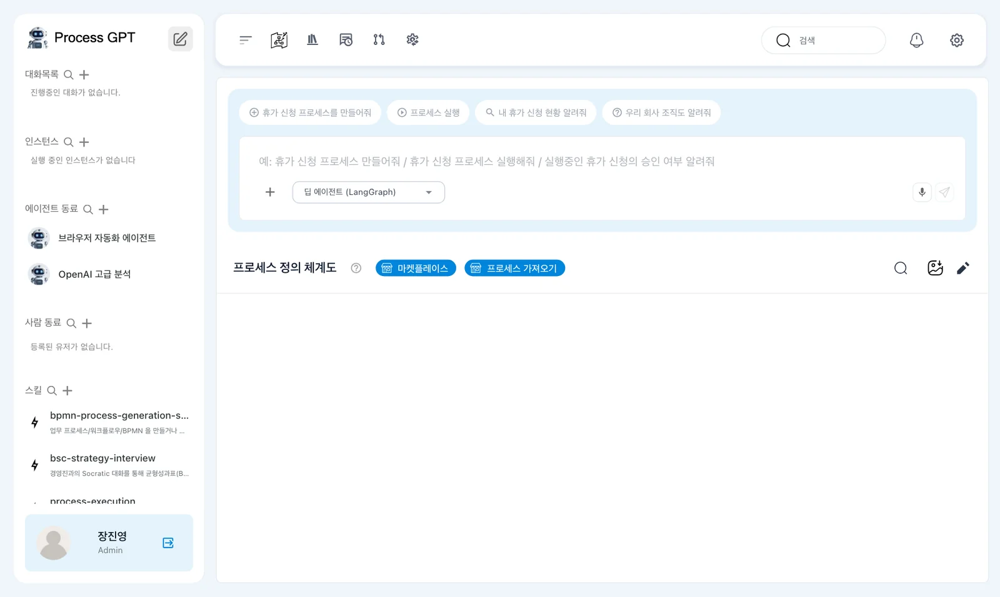
Process GPT에서는 대부분의 작업을 이 채팅 상자에서 시작합니다. 만들고 싶은 프로세스를 말로 설명하면 프로세스가 만들어지고(3장), 회사 문서를 첨부해 질문하면 그 문서를 근거로 답합니다(8장). 상자 위의 예시 문장(「휴가 신청 프로세스를 만들어줘」 등)을 누르면 그 문장이 입력됩니다.
| 상자 안의 단추 | 하는 일 |
|---|---|
| ＋ | 「파일 첨부」, 「지식 베이스」, 「폴더 업로드」 — 대화에 문서를 첨부합니다 |
| 「딥 에이전트 (LangGraph)」 ▾ | 대화를 맡을 에이전트를 고릅니다(아래 표) |
| 🎤 | 말로 입력합니다 |
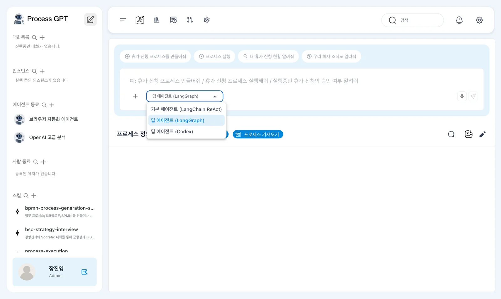
| 에이전트 | 작동 방식 | 언제 |
|---|---|---|
| 딥 에이전트 (LangGraph) | 여러 단계를 스스로 계획하고 작업 폴더에 파일을 만들며 작업합니다. 기본값입니다 | 프로세스 · 폼 · 스킬을 만들 때, 문서를 찾아 읽을 때 |
| 딥 에이전트 (Codex) | 같은 딥 에이전트를 Codex 엔진으로 실행합니다 | Codex를 쓰는 설치본에서 |
| 기본 에이전트 (LangChain ReAct) | 도구를 선택해 호출하며 간결하게 답합니다 | 간단한 질문, 빠른 프로세스 초안 |
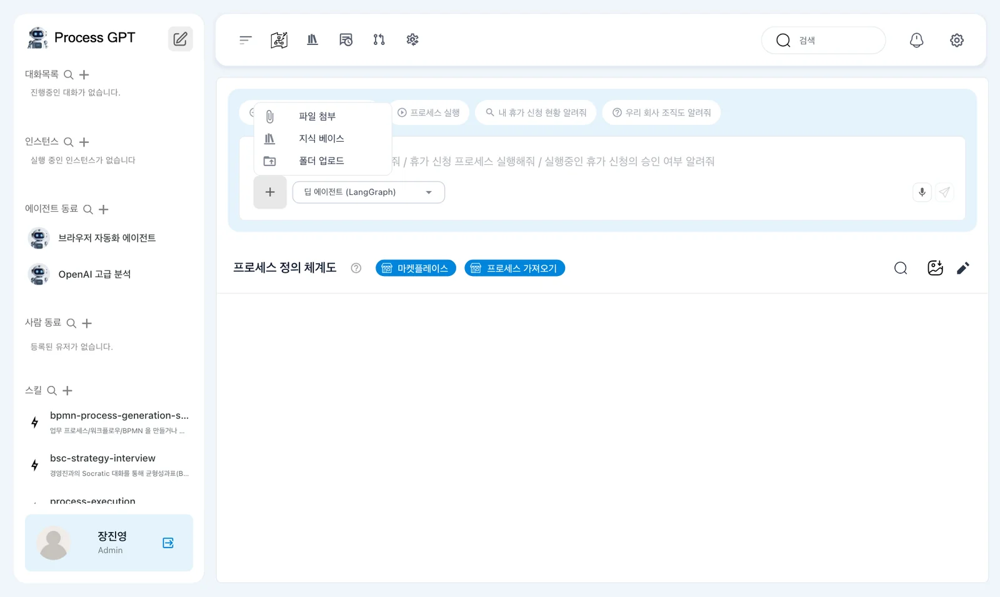
프로세스 정의 체계도에는 만든 프로세스가 영역별로 쌓입니다. 새로 만든 프로세스는 먼저 「미분류」 아래에 들어갑니다. 「마켓플레이스」에서는 공유된 프로세스 템플릿을, 「프로세스 가져오기」로는 다른 곳에서 내보낸 프로세스(.zip)를 가져옵니다(4장).
왼쪽 사이드바#
사이드바는 지금 진행 중인 것과 함께 일하는 동료를 보여 줍니다. 각 구역 위쪽에 🔍 찾기와 ＋ 추가 두 단추가 같은 자리에 있습니다.
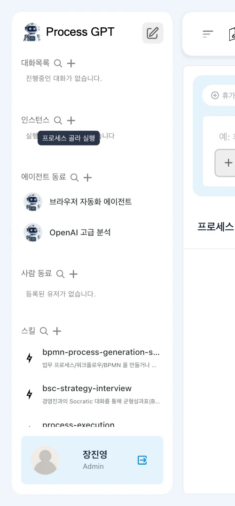
| 구역 | 보이는 것 | 🔍 | ＋ |
|---|---|---|---|
| 대화목록 | 지금까지의 대화방 | 대화 검색 | 새 대화(홈 채팅 상자로) |
| 인스턴스 | 실행 중인 프로세스 한 건 한 건. 내가 처리할 일이 있으면 「내 업무 N」 표시 | 완료된 인스턴스 검색 | 프로세스 골라 실행 |
| 에이전트 동료 | AI 에이전트. 처음부터 「브라우저 자동화 에이전트」와 「OpenAI 고급 분석」이 있습니다 | 에이전트 검색 | 에이전트 생성 |
| 사람 동료 | 같은 회사의 사람 | 사람 검색 | 사람 초대 |
| 스킬 | 에이전트가 쓰는 스킬. 처음부터 프로세스 만들기(bpmn-process-generation-skill) 등이 있습니다 |
스킬 검색 | 스킬 추가 |
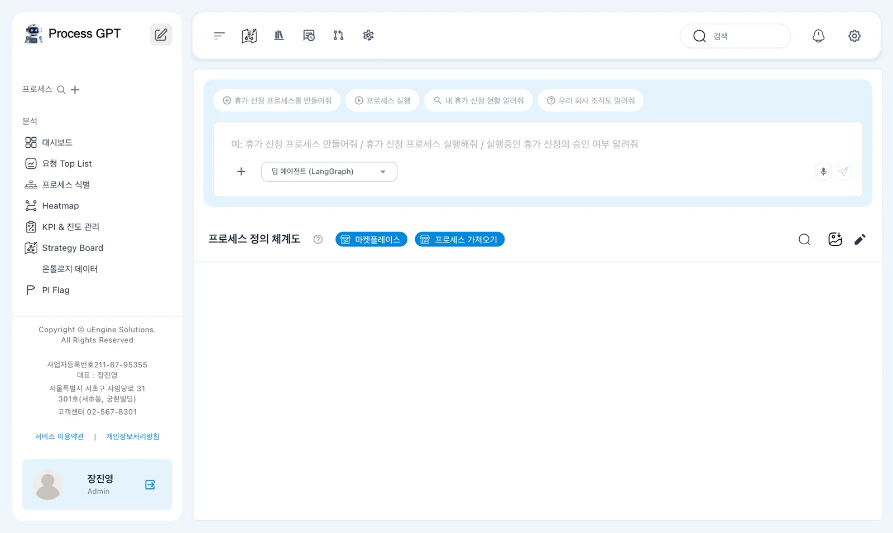
인스턴스라는 말이 앞으로 자주 나옵니다. 프로세스 정의가 설계도라면, 인스턴스는 그 설계도대로 실제로 진행되는 한 건입니다. 「영업 제안서 작성」 프로세스는 하나지만, 고객 요청이 올 때마다 인스턴스가 하나씩 생깁니다.
내게 온 일은 「내 업무 N」으로 찾습니다
프로세스를 실행하면 단계마다 담당자에게 할 일이 배정됩니다. 내가 처리할 일이 있는 인스턴스에는 사이드바에서 파란 「내 업무 N」(N은 그 인스턴스에서 내가 처리할 일의 수)이 붙습니다. 그 인스턴스를 눌러 「칸반보드」에서 「내 업무」 카드를 엽니다(6장). 지금은 실행한 프로세스가 없어 「실행 중인 인스턴스가 없습니다」가 보입니다.
위쪽 막대#
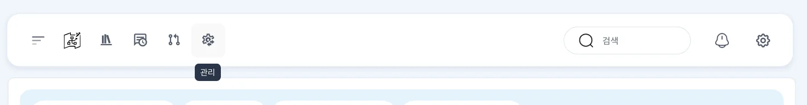
| 아이콘 | 이름 | 하는 일 |
|---|---|---|
| ☰ | 사이드바 접기/펼치기 | 화면을 넓게 씁니다 |
| 지도 모양 | Strategy Board | 회사 전략과 프로세스를 잇는 화면 |
| 책 모양 | 지식 베이스 | 회사 문서 모음(8장) |
| 말풍선 모양 | 내 피드백 | 내가 남긴 피드백 |
| 갈래 모양 | 병합 요청함 | 프로세스 · 스킬 변경 요청 검토 |
| 톱니바퀴 모양 | 관리 | 관리 화면 모음(관리자에게만 보입니다) |
| 🔍 · 🔔 · ⚙ | 검색 · 알림 · 설정 |
「관리」 메뉴#
관리 화면은 위쪽 막대의 「관리」에 모여 있습니다. 관리자에게만 보입니다.
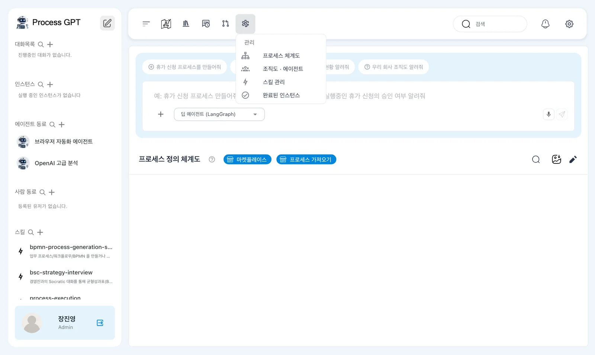
| 메뉴 | 하는 일 |
|---|---|
| 프로세스 체계도 | 회사의 프로세스를 도메인 › 메가 프로세스 › 메이저 프로세스 › 서브 프로세스로 정리합니다 |
| 조직도 · 에이전트 | 부서와 구성원, AI 에이전트를 관리합니다(5장) |
| 스킬 관리 | 에이전트가 쓰는 스킬을 관리합니다(11장) |
| 완료된 인스턴스 | 끝난 실행 기록을 찾습니다 |
프로세스 체계도에서는 위쪽의 「계층 · 카드 · 매트릭스 · 트리」로 표시 방식을 바꿉니다. 숫자 줄에서는 각 단계(0~4단계)에 있는 프로세스 수를 확인합니다. 아직 프로세스가 없으니 모두 0입니다.
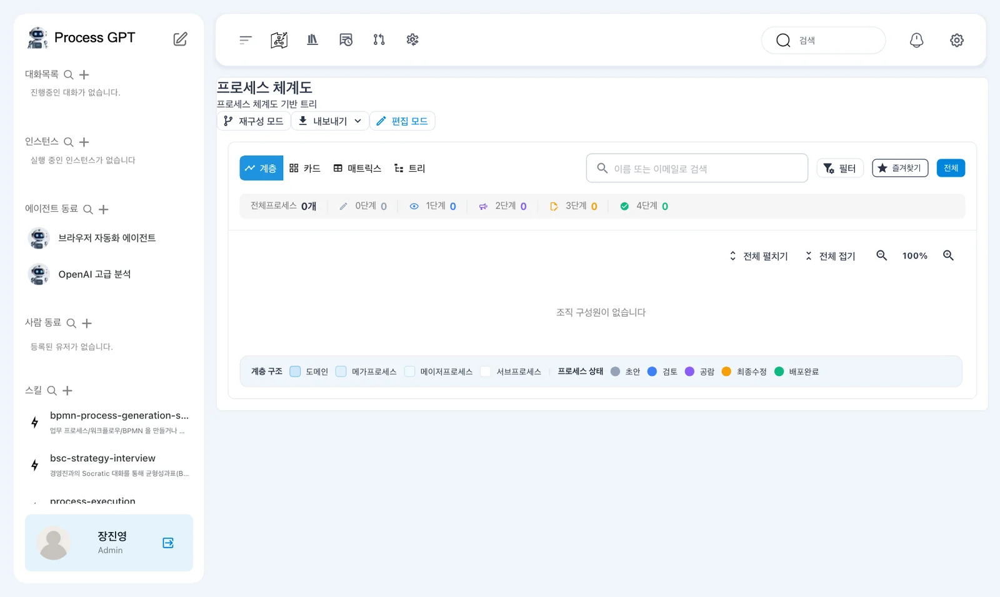
조직도#
「관리」 › 「조직도 · 에이전트」를 누르면 조직도가 열립니다. 맨 위 숫자 줄에 부서 · 구성원 · 미배치 수가 보이고, 아래쪽 「미배치 인원」에는 아직 어느 부서에도 배치하지 않은 사람이 있습니다. 부서를 만들고 사람을 넣는 일은 5장에서, 에이전트를 만드는 일은 9장에서 합니다.
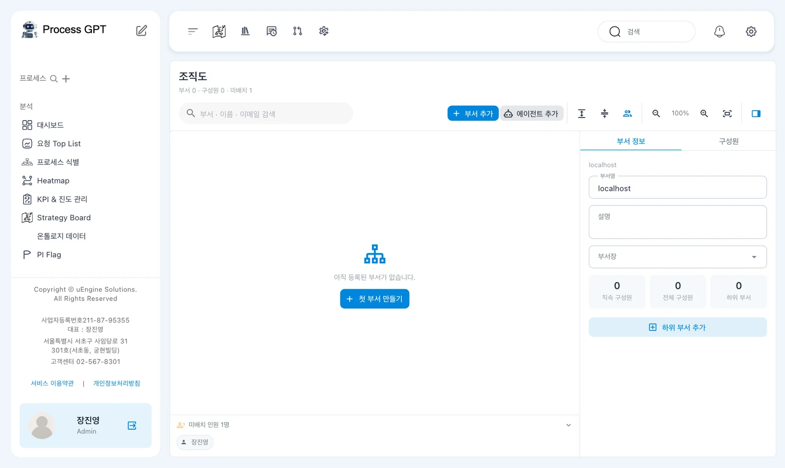
설정#
위쪽 막대의 ⚙을 누르면 설정이 열립니다. 이 튜토리얼에서 쓰는 탭은 다음과 같습니다(18장).
| 탭 | 하는 일 |
|---|---|
| 계정 설정 | 이름 · 사진, 2단계 인증 |
| 사용자 관리 | 같은 회사 사람 관리 |
| 지식 베이스 · MCP 서버 · 환경변수 | 에이전트가 쓰는 문서 · 도구 · 설정 |
| 테넌트 관리 | 회사(테넌트) 정보 |
| 한국어 ▾ | 화면 언어 |
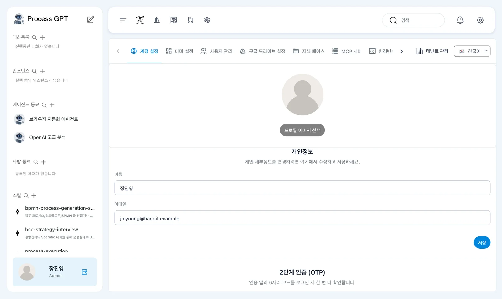
휴대폰에서 열면#
휴대폰 브라우저에서 Process GPT에 로그인하면 PC와 같은 화면이 휴대폰 크기에 맞게 축소되어 표시됩니다. 두 손가락을 벌리면 화면이 확대됩니다.
홈 화면에 앱으로 추가하지 않았다면 맨 위에 「홈 화면에서 앱처럼 열기」 띠가 표시됩니다. 「추가」를 누르면 안드로이드 크롬에서는 설치 창이 열리고, iPhone의 Safari에서는 공유 단추를 눌러 「홈 화면에 추가」를 선택하라는 안내가 표시됩니다. 웹으로 계속 사용하려면 「다시 보지 않기」를 누릅니다. 이후 해당 휴대폰에서는 띠가 다시 표시되지 않습니다.
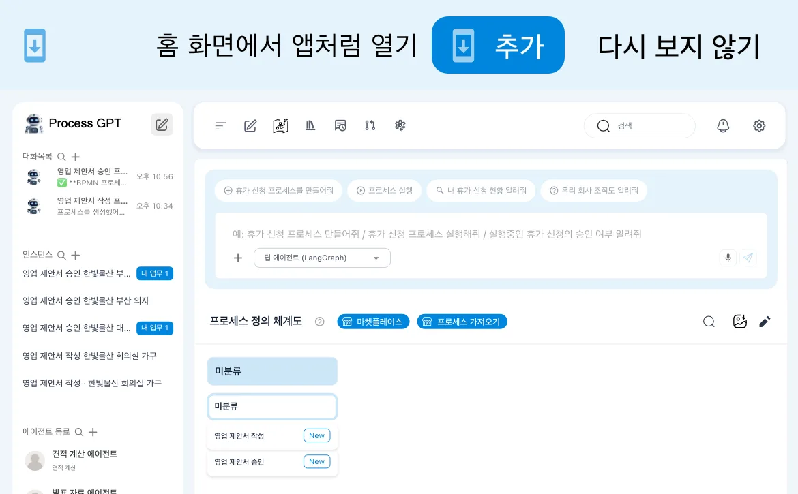
휴대폰에서 열 화면은 ⚙ 설정 › 「테마 설정」의 「휴대폰 화면」에서 세 가지 중 하나를 고릅니다.
| 선택 | 열리는 화면 |
|---|---|
| 데스크톱 버전(기본) | PC와 같은 화면을 휴대폰 크기에 맞게 축소한 화면 |
| 모바일 버전 | 휴대폰에 맞춘 휴대폰 웹 |
| 라이트 모드 | 같은 주소의 /lite/에 있는 Process GPT Lite. Lite가 설치된 서버에서만 쓸 수 있습니다 |
「모바일 버전」을 선택하면 해당 휴대폰에서는 휴대폰 웹이 열립니다. 휴대폰 웹에서는 내 일을 처리하는 화면만 사용합니다. 하단의 탭 다섯 개로 화면을 전환하며, 프로세스 설계 · 조직도 · 분석 같은 관리 화면은 PC 화면에서 엽니다.
로그인과 2단계 인증 화면은 PC와 같습니다. 2단계 인증을 켠 계정은 인증 앱의 코드를 입력해야 휴대폰 웹이 열립니다. 로그인 전에 연 업무·알림 주소는 로그인 후 해당 화면으로 이어집니다.
| 탭 | 하는 일 |
|---|---|
| 할 일 | 내 차례인 업무와 반려 사유, 에이전트에 맡긴 일, 내가 올린 요청 |
| 진행 | 진행 중인 업무를 단계별 타임라인으로 봅니다. 반려된 단계는 사유와 함께 남습니다 |
| AI | 채팅 상자처럼 AI와 대화합니다. 사진 · 파일을 붙일 수 있습니다 |
| 알림 | 나에게 온 업무 알림입니다. 누르면 해당 업무가 열립니다 |
| 나 | 내가 올린 요청 · 맡긴 일 · 끝난 일, 언어, 화면 밝기, 「PC 화면으로 보기」 |
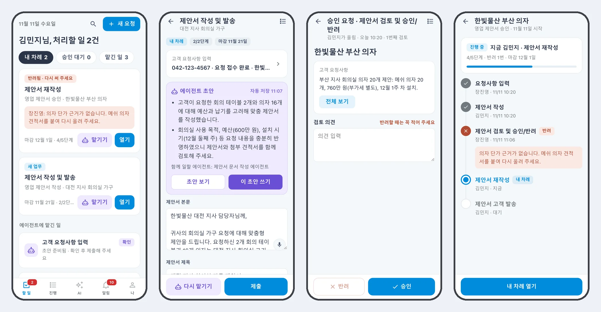
업무를 열면 위에서부터 반려 사유, 앞 단계 내용, 에이전트 초안, 입력 칸이 차례로 보입니다. 아래쪽 「에이전트에 맡기기」를 누르면 6장처럼 딥 에이전트가 입력 양식을 채우고 요약을 남깁니다. 승인 · 반려 업무에는 미리 골라 둔 값이 없습니다. 의견을 적어야 「반려」를 누를 수 있습니다.
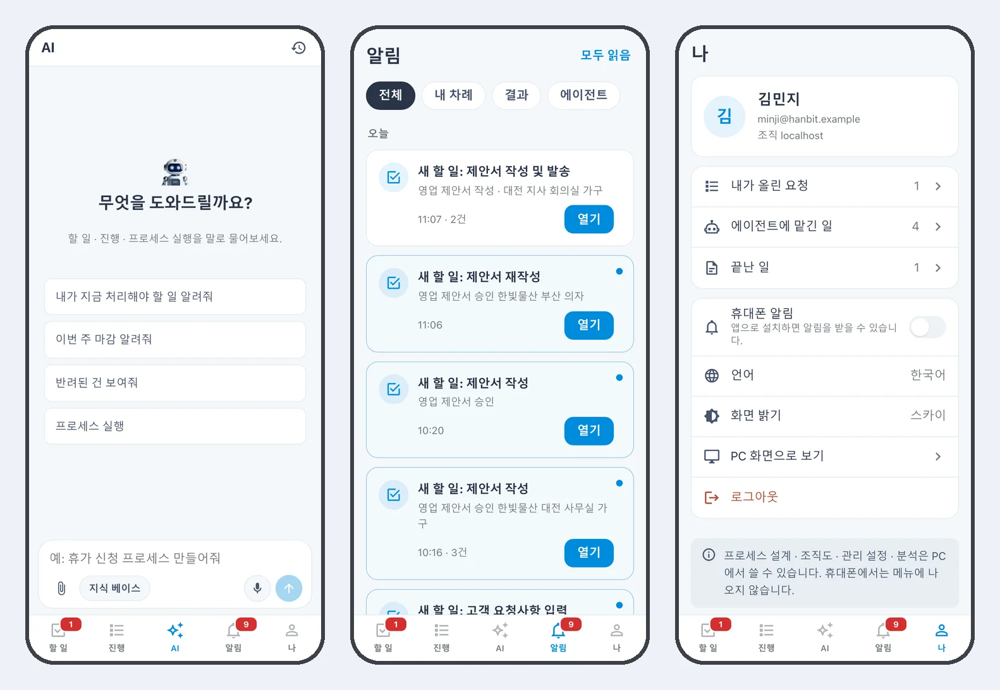
PC 화면으로 돌아가려면 휴대폰 웹의 「나」 탭에서 「PC 화면으로 보기」를 누릅니다. 선택한 화면은 해당 휴대폰의 브라우저에만 저장됩니다.
「라이트 모드」를 선택하면 해당 휴대폰에서는 Process GPT 대신 Process GPT Lite가 열립니다. 알림 링크처럼 Process GPT 주소로 들어와도 Lite로 이동합니다. Lite가 설치되지 않은 서버에서는 「이 서버에는 Process GPT Lite가 설치되어 있지 않아 라이트 모드를 쓸 수 없습니다.」라는 안내만 표시되고 화면은 바뀌지 않습니다. 이 튜토리얼의 설치본에는 Lite가 없어 이 안내가 표시됩니다. 라이트 모드에서 PC 화면으로 돌아가려면 Process GPT 주소 끝에 ?mobileView=desktop을 붙여 엽니다(예: /definition-map?mobileView=desktop).
따라 하기 — 한 바퀴 돌기#
- 로그인하면 열리는 홈에서 채팅 상자의 「딥 에이전트 (LangGraph)」 ▾를 눌러 에이전트 세 가지를 확인하고, ＋를 눌러 메뉴를 봅니다. 아무것도 보내지는 않습니다.
- 사이드바의 각 구역 위쪽에 있는 🔍 · ＋에 마우스를 올려 이름을 봅니다.
- 위쪽 막대의 「관리」를 눌러 메뉴 네 가지를 보고, 「프로세스 체계도」를 엽니다. 「카드」, 「트리」를 눌러 표시 방식이 바뀌는지 확인합니다.
- 「관리」 › 「조직도 · 에이전트」로 조직도를 엽니다.
- ⚙ 설정을 열어 탭 이름을 훑어봅니다.
- 휴대폰이 있다면 휴대폰 브라우저에서 같은 주소로 접속해 로그인한 뒤 맨 위의 띠를 확인합니다. ⚙ 설정 › 「테마 설정」의 「휴대폰 화면」에서 「모바일 버전」을 선택한 뒤 휴대폰 웹의 하단 탭 「할 일 · 진행 · AI · 알림 · 나」를 차례로 눌러 봅니다.
다음 장으로#
화면을 익혔으니 다음 장에서는 홈의 채팅 상자로 첫 프로세스 「영업 제안서 작성」을 만듭니다(3장).
확인 문제
- 프로세스 정의와 인스턴스는 어떻게 다른가요?
- 채팅 상자에 회사 문서를 붙이려면 어디를 누르나요?
- 프로세스를 실행했을 때 내게 온 할 일은 어디서 찾나요?
답
- 정의는 단계 · 담당 · 폼을 적은 설계도이고, 인스턴스는 그 설계도대로 실제로 진행되는 한 건입니다. 정의 하나로 인스턴스를 여러 건 실행합니다.
- 채팅 상자의 ＋를 누르고 「파일 첨부」(내 컴퓨터의 파일), 「지식 베이스」(올려 둔 회사 문서), 「폴더 업로드」 중에서 고릅니다.
- 사이드바 「인스턴스」에서 「내 업무 N」이 붙은 인스턴스를 엽니다. 「칸반보드」의 「내 업무」 카드가 내 할 일입니다.